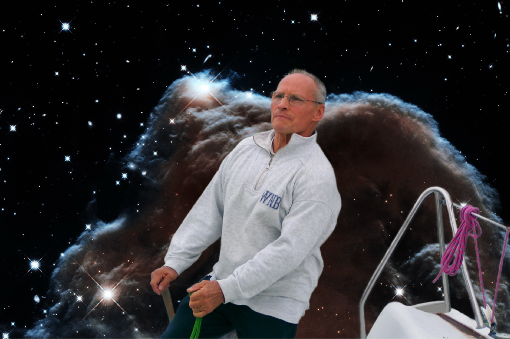

À propos du livre

En 4ème de couverture, un montage photographique, réalisé par son fils Gabriel, capturant Jean-Clément à la barre d'un voilier sur le Grand Large, naviguant sous un ciel étoilé, symbole de sa vie guidée par les astres et la mer.
Né le 2 septembre 1937 à Loisy, en Saône-et-Loire, et décédé le 29 janvier 2016, Jean-Clément Louche a vécu avec une passion débordante pour le vol à voile, l'aéronautique et la navigation. Mécanicien d'avion breveté, il forgea une carrière exemplaire, passant de mécanicien poids lourds à chef de service à la voirie de la ville de Lyon, après des années de cours du soir et une ascension aux bureaux d'études de la ville.
Amoureux de la mer, il obtint tous ses permis de navigation – fluvial et hauturier – et s'investit avec ferveur dans l'organisation de la base de voile de la ville de Lyon au Grand Large. Régatier aguerri, il sillonna les eaux, notamment dans la région de Bandol. Également fasciné par l'astronomie, il scrutait les étoiles et s'engagea dans l'observation des objets célestes, devenant membre et enquêteur de la revue Lumière dans la Nuit, explorant le mystère des OVNI.
Homme de savoir, Jean consacra des années à rédiger une encyclopédie de la navigation astronomique, un ouvrage unique, aujourd'hui mis en page pour une possible édition. Ce livre est un hommage à sa vie, à ses passions et à son héritage, naviguant entre ciel et mer, toujours en quête de l'horizon.
Commander une impression